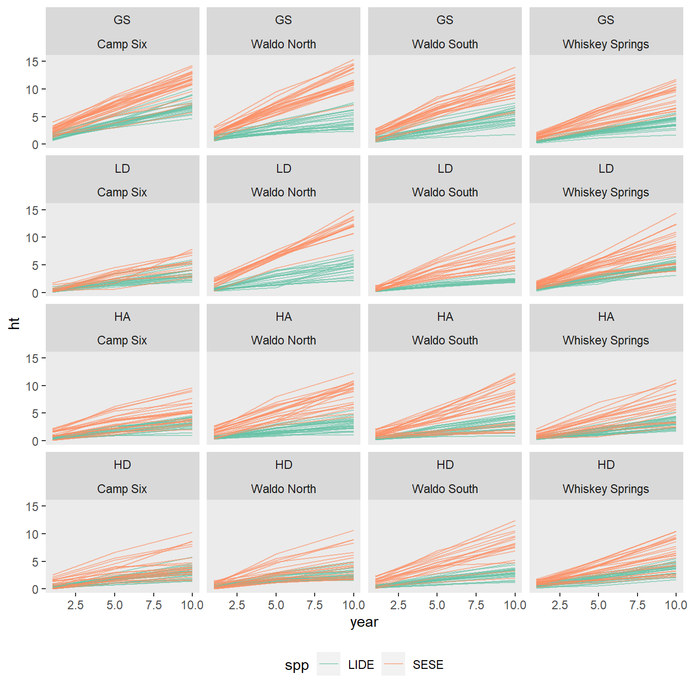
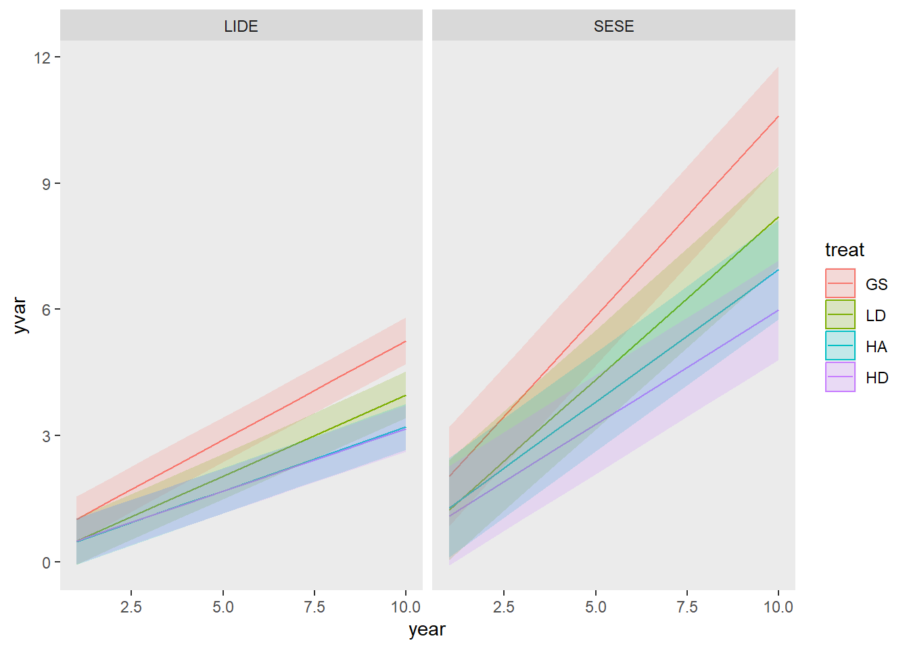

suppressPackageStartupMessages(library(lme4))suppressPackageStartupMessages(library(modelsummary))suppressPackageStartupMessages(library(marginaleffects))suppressPackageStartupMessages(library(ggdist))suppressPackageStartupMessages(library(ggokabeito))suppressPackageStartupMessages(library(ggridges))suppressWarnings(suppressPackageStartupMessages(library(tidyverse)))sprouts_fresh <- readxl::read_excel("../data/Sprouts10yr.xlsx")set.seed(743)slice_sample(sprouts_fresh, n =4) |> knitr::kable()
Site
Plot
Trtmt
Tree
Species
HT1yr_m
HT5yr_m
HT10yr_m
HTI1-5yr
HTI5-10yr
DBH10yr_cm
LCBH10yr
CR10yr
HD10yr
SDIinit
AggregatedYN
ResidRWonClumpYN
HT10rank
Waldo North
2
GS
285
LIDE
1.72
3.55
6.30
0.4575
0.550
NA
NA
NA
NA
0.00
0
NA
4
Waldo South
4
GS
13
SESE
1.14
3.11
6.00
0.4925
0.578
6.6
0.60
0.900000
90.90909
0.00
0
0
21
Whiskey Springs
4
HA
1904
LIDE
0.29
0.96
1.94
0.1675
0.196
NA
NA
NA
NA
536.33
1
NA
24
Whiskey Springs
2
HD
1405
SESE
1.83
5.21
9.20
0.8450
0.798
12.5
0.01
0.998913
73.60000
509.90
0
0
6
The data is in a wide format, variables are as follows:
Table 6.1: Descriptions of variables in dataset.
Variable
Description
Site
One of four sites where treatments were replicated. Sites were located on similar slope positions, but across a range of aspects.
Plot
There were 4 plots at each site and each was randomly assigned a treatment
Trtmt
Treatemnt type: GS = group selection, which is basically a small clearing, LD = low density--fewer trees remaining; HD = high density--more trees remain and they are dispersed; HA = high density aggregated--more trees remain and they are grouped into clumps.
Tree
Unique sprout ID within Site, Plot, and Species
Species
SESE = coast redwood, and LIDE = tanoak.
HT1yr_m
Sprout height one year after treatment.
HT5yr_m
Same as above, but for year 5
HT10yr_m
Same as above, but for year 10
HTI1-5yr
Height growth between years 1 and 5, (4 growth periods)
HTI5-10yr
Height growth between years 5 and 10 (5 growth periods)
DBH10yr_cm
Diameter at breast height in cm at year 10. Only collected for redwood
LCBH10yr
Live crown base height (height to first live branch) at year 10. Only collected for redwood.
CR10yr
Crown ratio (live crown length / total height) at year 10, only for redwood
HD10yr
Unknown.
SDIinit
Stand density index of plot immediately after treatment.
AggregatedYN
Indicator for treatment HA.
ResidRWonClumpYN
Unknown.
HT10rank
Trees species specific height ranking within plot.
6.2 Wrangle
I’m going to change some variable names to make them more ergonomic
Our data are nested. We have plots within sites, trees within plots, and observeations within trees (multiple observations per tree).
Sites
└─ Plots
└─ Trees
└─ Observations
Each Treatment is represented by one site/plot combination. Each site belongs to each treatment and vice versa. I think the terminology here is that Sites and treatments are crossed.
Currently, plot (integer) is only unique within site and tree is only unique within site, treat, and spp. It will be more convenient if plot and tree are globally unique identifiers. This makes the nesting structure implicit and we can simplify our model syntax.
I’m also going to order the treatments acording to our expectations about the most to least productive. This will affect how they are plotted and reported.
I will need a function to convert a variable in the data from wide to long format.
Code
lengthen_data <-function(data, var) {# I need regex for first part to handle ht and ht_inc and pref <-switch(var, ht ="(ht)", ht_inc ="(ht_inc)")# and the year suf <-"(\\d+)" str_to_match <-paste0(pref, suf)pivot_longer(data,matches(str_to_match),names_to =c(".value", "year"),names_pattern = str_to_match,names_transform =list(year = as.integer) ) |>relocate(year, matches(paste0(pref, "$")), .after = spp)}
6.3 Objectives
Which treatment(s) have the greatest impact on redwood and tanoak height growth and what is the magnitude of this effect?
Does any treatment promote promote either of these two species preferentially?
What is the treatment/species specific relatinship between age and height growth and if this continues, what will the predicted heights be in another 5 years?
6.4 Visualize data
6.4.1 Tree heights
The following figures reveal possible trends in the raw data.
6.4.1.1 Species/treatment/year
Figure 6.1 reveals fine, species specific differences between treatments and general trends over time. It shows that over time, LD and GS treatments have more taller trees than the other treatments, with GS having the most. This is true for both redwood and tanoak. Additionaly, for redwood it appears that HA may have taller trees than HD, at least in year 10.
Figure 6.2 shows the same information as before, but is arguably easier to look at. There is a generall increasing trend in heights with treatments as follows:
HD < HA < LD < GS
Redwood is consistently taller than tanoak, and the GS treatment confers the greatest advantage to redwood.
Across all treatments, it is also interesting to note that over times, the height distributions, especially for redwood, seem to becoming more multi-modal and more widely distributed. This could be due to site or plot effects, or to microsite (within plot) effects, but it is not immediately clear why this diverging performance should be so apparent with redwood and not tanoak.
Figure 6.1: Height distributions for tanoak and redwood over time for each of four treatments. Treatments GS and LD have higher proportions of taller trees. Years refers to number of years after treatment.
Figure 6.2: Similar to Figure 6.1, but with an emphasis on differences between speceis responses across treatments. Comparisons are made for each year. The GS treatment appears to favor redwood response the most, but all treatments show redwoods are taller than tanoak. Years refers to number of years after treatment.
6.4.1.2 Species/year/SDI
Figure 6.3 shows that above around 400 SDI, tree heights level off. It also implies a steady decrease in height from 0 to around 400 SDI. The strength of the relationship appears to be increasing over time, particularly for redwood.
`geom_smooth()` using method = 'loess' and formula = 'y ~ x'
Figure 6.3: SDI vs HT for both species, across measurement years.
6.4.1.3 Species/site/plots
Lets see what the variability among sites and plots looks like, I’ll focus on year 10 only.
Figure 6.4 reveals some differences between sites, particularly for redwoods. Waldo North tends to have larger redwoods and Camp 6 has a large proportion of smaller redwoods.
1 shows that much of the difference in sites has to do with one outlier plot within a site, and less about general site trends. We should expect plots to capture a portion of the variance. Most notable is the plot level difference between redwood and tanoak. For redwood, the large ammount of within plot variability combined with the between plot variability obscures the treatment (and site) effect. If you squint, there appears to be a similar overall pattern between redwood and tanoak repsonse to treatment, but it appears they respond differentially to certain plots.
Figure 6.4: Distribution of heights at year 10 at each site for two species. Slabs are normalized by sample size to reflect the raw data, plotted as dots below.
Figure 6.5: Same as for Figure 6.4, but for each plot (Site/treatment interaction). Grouped by treatment.
6.4.2 Height increments
Height increments contain similar information as heights, but allow us to compare directly between years.
Figure 6.6 shows that across treatments and species, height growth slows down in the second period (years 5-10). This is more true for redwood but it starts with more rapid growth than tanoak. In the most crowded treatment (HD), redwoods height increment has become slower than tanoaks in the second period. Also, in the second period, the high density, aggregated treatment appears to have slightly higher (or equal) average growth increment, which is not completely expected.
Figure 6.6: Variations in annual height growth increment between the first and second measurement periods (years 1-5, and 5-10, respectively).
6.5 Modeling
In addition to characterizing redwood growth response, we would also like to accurately describe differences between redwood and tanoak. This is probably best accomplished by including species in the model, and modeling the difference directly.
because of our multiple grouping variables, model complexity can grow quickly, especially when considering how covariates interact with grouping variables, which lead to random slope models
I’m also wondering what it means to include a categorical variable as a random slope (on the LHS of the random parts). Michael Clark explores this scenario, with some simpler data.
In any case, following the pattern of data summaries above, I’ll start by modeling to detect treatment differences in tree height.
6.5.1 First model
I’ll start with the simplest model that I’m willing to look at: a treatment/species interaction for only year 10. This model is not that bad, the residuals indicate some heteroskedasticity, but otherwise look randomly distributed around zero. It has a moderate r-squared (0.55). It doesn’t account for non-independence due to nesting structure of our data though. Figure 6.7 shows the predictions and confidence intervals for this model.
# I'm calling the height data "d"d <- sprouts |>lengthen_data("ht")m1 <-lm(ht ~ treat * spp, data =filter(d, year ==10))
Code
# These are all the same, they produce predicitons and confidence intervals for# each combination of treatments based on the model. # predictions(m1, newdata = datagrid(treat = unique, spp = unique))# marginal_means(m1, variables = c("treat", "spp"), cross = TRUE) |> as_tibble()library(emmeans)library(multcomp)
Loading required package: mvtnorm
Loading required package: survival
Loading required package: TH.data
Loading required package: MASS
Attaching package: 'MASS'
The following object is masked from 'package:dplyr':
select
Attaching package: 'TH.data'
The following object is masked from 'package:MASS':
geyser
Figure 6.7: Model predictions for year 10 height, with 95% confidence intervals, for model 1.
6.5.2 Including multiple years
By including year as a numeric variable, we are assuming a liner relationship between year and height. This term (and it’s interactions) can than be interpreted as a modeled growth increment, and although we only have observations at years 1, 5, and 10, other years predictions will be linerally interpolated. But to do this, we have to justify modeling height as linear with time (at least for the first 10 years of growth).
We saw in Figure 6.6 that increment does slow down somewhat in the second measurement period (year 5-10), at least for redwoods, but we may be justified in overlooking this. Lets look at individual tree’s height trajectories.
Code
d |>ggplot(aes(year, ht, color = spp, group = tree)) +geom_line(alpha =0.6) +facet_wrap(~treat*site) +scale_color_brewer(palette ="Set2") +theme(legend.position ="bottom" )

Figure 6.8: Data plot showing trajectory of individual tree heights across the three measurements. Height increase appears fairly linear with year.
For the most part, it looks like height increases linearly with year. So lets fit some models with year as a continuous variable.
The following models were fit, and are summarized in Table 6.2.
OLS linear model including year in a 3-way interaction.
Eliminate the 3-way interaction (spp:treat:year), keeping others. This results in a significantly lower AIC.
First random-effects model including interactions and universal random slopes for site and plot, and time-series.
Allow the random effects to (co-) vary by species.
Same as 5, but attempt to remove the 3-way interaction again.
Same as 6, but attempt to simplify the random effects by forcing them to be estimated independently, correlation between species is not estimated.
Re-introduce the 3-way interaction again.
Omit the random effect for site. This is supported by the interpretation of
Like 9, but try simplified (independent) random effects.
Table 6.2: Summary table for models 2-10, described above. Standard error in parantheses.
Model 2
Model 3
Model 4
Model 5
Model 6
Model 7
Model 8
Model 9
Model 10
(Intercept)
0.552***
0.232+
0.559
0.546*
0.226
0.226
0.546
0.546*
0.546
(0.156)
(0.136)
(0.350)
(0.261)
(0.255)
(0.425)
(0.428)
(0.260)
(0.428)
treatLD
−0.369
−0.120
−0.421
−0.441
−0.191
−0.193
−0.442
−0.441
−0.442
(0.230)
(0.190)
(0.499)
(0.364)
(0.361)
(0.593)
(0.599)
(0.371)
(0.609)
treatHA
−0.372+
0.035
−0.390
−0.367
0.040
0.041
−0.366
−0.367
−0.366
(0.219)
(0.180)
(0.495)
(0.361)
(0.358)
(0.589)
(0.595)
(0.368)
(0.605)
treatHD
−0.348
0.258
−0.350
−0.345
0.262
0.262
−0.345
−0.345
−0.345
(0.220)
(0.181)
(0.495)
(0.361)
(0.358)
(0.589)
(0.596)
(0.368)
(0.605)
sppSESE
0.572**
1.215***
0.527*
0.535
1.178*
1.182*
0.539
0.535
0.539
(0.221)
(0.158)
(0.205)
(0.473)
(0.474)
(0.596)
(0.606)
(0.474)
(0.606)
year
0.471***
0.531***
0.471***
0.471***
0.531***
0.531***
0.471***
0.471***
0.471***
(0.024)
(0.019)
(0.017)
(0.017)
(0.013)
(0.013)
(0.017)
(0.017)
(0.017)
treatLD × sppSESE
−0.311
−0.807***
−0.224
−0.181
−0.677
−0.669
−0.173
−0.175
−0.173
(0.330)
(0.188)
(0.307)
(0.533)
(0.500)
(0.828)
(0.849)
(0.679)
(0.862)
treatHA × sppSESE
−0.100
−0.925***
−0.039
−0.057
−0.882+
−0.885
−0.060
−0.055
−0.059
(0.314)
(0.179)
(0.291)
(0.524)
(0.493)
(0.824)
(0.843)
(0.672)
(0.857)
treatHD × sppSESE
−0.245
−1.492***
−0.204
−0.186
−1.432**
−1.434+
−0.187
−0.186
−0.187
(0.316)
(0.180)
(0.293)
(0.525)
(0.494)
(0.825)
(0.844)
(0.673)
(0.857)
treatLD × year
−0.085*
−0.132***
−0.085***
−0.085***
−0.132***
−0.132***
−0.085***
−0.085***
−0.085***
(0.036)
(0.026)
(0.025)
(0.025)
(0.018)
(0.018)
(0.025)
(0.025)
(0.025)
treatHA × year
−0.169***
−0.245***
−0.169***
−0.169***
−0.245***
−0.245***
−0.169***
−0.169***
−0.169***
(0.034)
(0.024)
(0.023)
(0.023)
(0.017)
(0.017)
(0.023)
(0.023)
(0.023)
treatHD × year
−0.175***
−0.288***
−0.175***
−0.175***
−0.288***
−0.288***
−0.175***
−0.175***
−0.175***
(0.034)
(0.024)
(0.023)
(0.023)
(0.017)
(0.017)
(0.023)
(0.023)
(0.023)
sppSESE × year
0.481***
0.360***
0.481***
0.481***
0.360***
0.360***
0.481***
0.481***
0.481***
(0.034)
(0.018)
(0.024)
(0.024)
(0.012)
(0.012)
(0.024)
(0.024)
(0.024)
treatLD × sppSESE × year
−0.093+
−0.093**
−0.093**
−0.093**
−0.093**
−0.093**
(0.051)
(0.035)
(0.035)
(0.035)
(0.035)
(0.035)
treatHA × sppSESE × year
−0.155**
−0.155***
−0.155***
−0.155***
−0.155***
−0.155***
(0.048)
(0.033)
(0.033)
(0.033)
(0.033)
(0.033)
treatHD × sppSESE × year
−0.234***
−0.234***
−0.234***
−0.234***
−0.234***
−0.234***
(0.049)
(0.034)
(0.034)
(0.034)
(0.034)
(0.034)
SD (Observations)
1.016
1.016
1.031
1.034
1.016
1.016
1.016
SD (Intercept treespp)
0.844
0.852
0.852
SD (Intercept plotspp)
0.795
0.795
0.809
SD (Intercept tree)
0.925
SD (sppLIDE tree)
0.000
0.000
0.000
SD (sppSESE tree)
1.227
1.223
1.227
Cor (sppLIDE~sppSESE tree)
0.284
SD (Intercept plot)
0.638
SD (sppLIDE plot)
0.463
0.474
0.474
SD (sppSESE plot)
0.913
0.919
1.037
Cor (sppLIDE~sppSESE plot)
0.783
0.782
0.570
SD (Intercept site)
0.000
SD (sppLIDE site)
0.104
0.000
SD (sppSESE site)
0.487
0.629
Cor (sppLIDE~sppSESE site)
−1.000
SD (Intercept sitespp)
0.153
0.153
Num.Obs.
2076
2076
2076
2076
2076
2076
2076
2076
2076
R2
0.756
0.753
R2 Adj.
0.754
0.752
R2 Marg.
0.866
0.866
0.862
0.732
0.734
0.745
0.734
R2 Cond.
0.882
0.886
0.885
0.886
AIC
7518.3
7536.9
6949.5
6685.6
6715.7
6930.9
6901.5
6682.9
6899.5
BIC
7614.1
7615.9
7062.3
6832.2
6845.3
7026.7
7014.2
6812.6
7006.6
ICC
0.6
0.6
0.5
0.6
Log.Lik.
−3742.145
−3754.458
RMSE
1.47
1.48
0.88
0.94
0.96
0.91
0.89
0.94
0.89
+ p < 0.1, * p < 0.05, ** p < 0.01, *** p < 0.001
The model with the lowest AIC is model 9. While it does have a singular warning, I believe this is because of the zero estimate of tree-level random effect variance for tanoak. The data exploration plots above show that compared to redwood, tanoak height distributions are much more homogenous. Given the similarities is coefficient and standard error estimates between model 9 and some of the models that did not give a warning, I don’t think that is is a problem. I considered removing the species specific tree effect, but this resulted in a much lower AIC–the tree variance for redwood is fairly large.
The next best model (AIC) is model 5, which is also the most complex model. Model 9 is only slightly better, but is more desireable because of it’s reduced complexity.
6.5.3 Interpretation
Using model 9, we can now answer the questions we posed in the Objectives section.
For question 1, “Which treatment(s) have the greatest impact on redwood and tanoak height growth and what is the magnitude of this effect?” we can visualize treatment specific height growth by species.
Code
library(emmeans)emmip( m9, spp ~ year | treat, CIs =TRUE, plotit =FALSE, at =list(year =1:10)) %>%ggplot(aes(year, yvar, color = treat, fill = treat)) +geom_line() +facet_wrap(~ spp ) +geom_ribbon(aes(ymin = LCL, ymax = UCL, color =NULL), alpha = .2)

Code
m9grid <-emmeans(m9, pairwise ~ treat, by =c("spp"), at =list(year =10))
NOTE: Results may be misleading due to involvement in interactions
Code
library(multcomp)library(multcompView)cld9 <-cld(m9grid, Letters = letters) |>as_tibble()filter(d, year ==10) |>ggplot(aes(treat, ht, color = spp, fill = spp)) +facet_grid(~spp, switch ="x") +theme(panel.spacing =unit(0, "lines"),strip.background =element_blank(),strip.text =element_blank(), ) +geom_dots() +scale_color_brewer(palette ="Set2", aesthetics =c("color", "fill")) +geom_pointrange(data = cld9, aes(y = emmean, ymin = lower.CL, ymax = upper.CL),color ="gray50", position =position_nudge(x =-0.07),size =0.7,linewidth =1,show.legend =FALSE ) +geom_text(data = cld9, aes(y = upper.CL, label = .group), color ="black", position =position_nudge(x =-0.3, y =0.2))